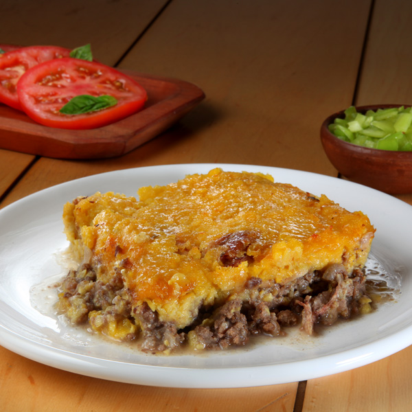

- Preparación de ingredientes
Para empezar, prepararemos trodos los ingredientes de antemano
- Cortaremos las cebollas en cuadritos, ni muy finos ni muy grandes
- Desgranaremos nuestros choclos con un cuchillo
- Luego, pasaremos los choclos desgrandos por una procesadora,
la idea es obtener una pasta a partir del maiz. A medida que trituremos el choclo
iremos pasando también la albhaca para que se vaya añadiendo a la pasta
- Cortaremos los ajos bien finos
- Pondremos a cocer los huevos en una olla hasta que queden bien cocidos
- Preparación del pino
El pino es un sofrito que tiene principalmente cebolla, ajo y carne. Será la base de nuestro pastel de choclo
- Con un poco de aceite en una sartén, sofreiremos las cebollas hasta que queden translúcidas
- Luego añadiremos la carne hasta que se cocine. En este punto agregaremos el comino y el ajo
- Finalmente agregaremos el vino y dejaremos cocinar a fuego medio bajo hasta que reduzca por una media hora
- Preparación de la mazamorra
La mazamorra es una pasta de choclo que usualmente se debe de cocer apor un largo período de tiempo antes de poder ser usada dentro de un plato
- Tomaremos nuestra pasta de choclo y la verteremos en una olla a fuego medio bajo para cocinarla
- Revolviendo constantemente, la cocinaremos hasta que tome la consistencia deseada. No debe quedar ni muy
sólida ni muy aguada
- Una vez lista la mazamorra, la reservaremos para poder juntarla con el resto de nuestro plato
- Preparación del plato

Estamos en la fase final de nuestro plato. Ya con todos los ingredientes preparados y cocinados por separados, los pondremos en un solo plato para que se termine de cocinar dentro del horno
- En una fuente grande o en hartos platos hondos por separados, pondremos una abundante base de pino. Además, agregaremos los huevos duros cortados por la mitad y las pasas
- En este punto, agregaremos nuestra mazamorra. La idea es que la mazamorra cubra el pino hasta llegar al borde de la fuente o de nuestros plantos hondos
- Ya con nuestra fuente o platos hondos ensamblados, espolvorearemos la superficie de nuestro pastel de choclo con una fina capa de azucar
- Finalmente, pondremos nuestro pastel de choclo a 220 grados durante unos 20 a 30 minutos aprox